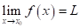
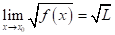
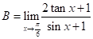
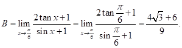

CÁC DẠNG BÀI TẬP TRẮC NGHIỆM GIỚI HẠN CỦA HÀM SỐ
I. GIỚI HẠN HỮU HẠN CỦA HÀM SỐ TẠI MỘT ĐIỂM
Câu 1: [Mức độ 1] Giả sử . Trong các khẳng định sau, khẳng định nào sai ?
A.  B.
B.  C.
C.  D.
D. 
Lời giải
Chọn C
Theo định lý ta có  nếu

Câu 2: [Mức độ 2] Tính .
A.  B. C.
B. C.  D.
D.
Lời giải
Chọn C
Ta có 